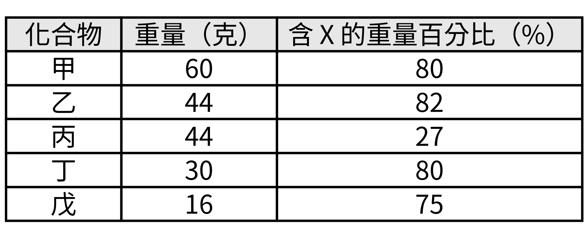

範圍：講義 p.29～34
基礎題
下列何者為目前 IUPAC 訂定的原子質量比較基準？
- (A) 氫原子
- (B) 碳原子
- (C) 12C
- (D) 14N
- (E) 16O
看答案與詳解
答案：(C)
(B) ✘ 「碳原子」包含 12C、13C 等同位素，不夠精確。(A) 是道耳頓早期的基準。
同溫壓、同重量的氣體硫化氫和氨氣，下列何者之比為 2：1？
- (A) 分子數
- (B) 原子數
- (C) 體積
- (D) 同莫耳數的分子重量
看答案與詳解
答案：(D)
莫耳數比＝(w/34)：(w/17)＝1：2 ⟶ 分子數、體積比都是 1：2。
原子數比＝1×3：2×4＝3：8。
同莫耳數的重量比＝分子量比＝34：17＝2：1 ⟶ 選 (D)。
等數目的 12C 原子與未知原子進行質量測定，得到兩者的質量分別為 4.0 克與 8.0 克，則未知原子的原子質量為多少 amu？
- (A) 4
- (B) 8
- (C) 12
- (D) 16
- (E) 24
看答案與詳解
答案：(E)
未知原子：12C＝8.0：4.0＝2：1 ⟶ 未知原子質量＝12×2＝24 amu，選 (E)。
〔易錯〕8.0 克是一大堆原子的總質量，不是原子量。
34.2 克蔗糖（C12H22O11，分子量為 342）所含的氫原子莫耳數為若干？
- (A) 0.1
- (B) 0.2
- (C) 1.2
- (D) 2.2
- (E) 3.2
看答案與詳解
答案：(D)
每個分子含 22 個 H ⟶ H 原子＝0.1×22＝2.2 mol，選 (D)。
下列關於 9 克水的敘述，哪些正確？（多選）
- (A) 含有 0.5 莫耳的原子
- (B) 含有 6.02×1023 個水分子
- (C) 含有 0.5 莫耳的氫原子
- (D) 含有 6.02×1023 個氫原子
- (E) 含有 0.5 莫耳的氧原子
看答案與詳解
答案：(D)(E)
(A) ✘ 1.5 mol。(B) ✘ 3.01×1023 個。(C) ✘ H 是 1 mol。(D) ✔ 1 mol H＝6.02×1023 個。(E) ✔。
試問 3.01×1023 個氮原子之質量為多少克？（原子量：N＝14）
- (A) 3.5
- (B) 7
- (C) 14
- (D) 21
- (E) 28
看答案與詳解
答案：(B)
〔易錯〕題目問「氮原子」，用原子量 14，不是 N2 的 28。
下列何者所含的 H 原子總數為 1 莫耳？（原子量：C＝12，H＝1，O＝16，N＝14）（多選）
- (A) 3.01×1023 個的氫氣
- (B) 9 公克的 H2O
- (C) 1.7 克 NH3
- (D) 3.2 克的 CH4
- (E) 3.01×1022 個葡萄糖分子
看答案與詳解
答案：(A)(B)
(A) ✔ 3.01×1023 個 H2＝0.5 mol ⟶ H 1 mol
(B) ✔ 9÷18＝0.5 mol H2O ⟶ H 1 mol
(C) ✘ 1.7÷17＝0.1 mol NH3 ⟶ H 0.3 mol
(D) ✘ 3.2÷16＝0.2 mol CH4 ⟶ H 0.8 mol
(E) ✘ 0.05 mol C6H12O6 ⟶ H 0.6 mol
某一容器中含有 CH4 和 C2H6 的混合氣體，其原子總數為分子總數的 6 倍，則 CH4 和 C2H6 的莫耳數比為若干？
- (A) 1：1
- (B) 1：2
- (C) 2：1
- (D) 3：1
- (E) 1：3
看答案與詳解
答案：(C)
5x＋8y＝6(x＋y) ⟶ x＝2y ⟶ x：y＝2：1，選 (C)。
已知氮原子與 X 原子可化合成 N2X4，且每個 N2X4 分子之質量約為 5.33×10−23 克，若已知氮之原子量為 14，則元素 X 的原子量為何？
- (A) 1
- (B) 4
- (C) 19
- (D) 28
- (E) 35.5
看答案與詳解
答案：(A)
2×14＋4X＝32 ⟶ X＝1（即 N2H4，聯胺），選 (A)。
〔易錯〕一個分子的質量要乘亞佛加厥數才是莫耳質量。
下列各數量的物質，何者含有最多量的原子總數？（原子量：C＝12、N＝14、O＝16）
- (A) 6.02×1023 個水分子
- (B) 0.5 莫耳的二氧化碳
- (C) 16 克臭氧（O3）
- (D) 28 克的氮氣
- (E) 14 克一氧化碳
看答案與詳解
答案：(A)
(A) 1 mol H2O×3＝3 mol ✔ 最多
(B) 0.5 mol CO2×3＝1.5 mol
(C) 16÷48＝1/3 mol O3×3＝1 mol
(D) 28÷28＝1 mol N2×2＝2 mol
(E) 14÷28＝0.5 mol CO×2＝1 mol
假設空氣中組成僅含 N2 與 O2，其他氣體忽略，若 N2 含 80％；O2 含 20％，試求空氣的平均分子量為何？
- (A) 14.4
- (B) 28.0
- (C) 28.8
- (D) 30.0
- (E) 32.0
看答案與詳解
答案：(C)
進階題
某化合物由 x 6.92 克和碳 0.584 克所組成，設已知 4 個 x 原子能和 1 個碳原子結合，則 x 的原子量為
- (A) 18.1
- (B) 35.5
- (C) 53.5
- (D) 60.0
- (E) 63.5
看答案與詳解
答案：(B)
質量比＝原子數×原子量比：6.92：0.584＝4M：12
M＝6.92×12÷(4×0.584)≈35.5，選 (B)（x 為氯，即 CCl4）。
下列何者具有最多量的氧原子？
- (A) 3.2 克氧氣
- (B) 0.2 莫耳氧氣
- (C) 1 克分子氧氣
- (D) 標準狀況下 2.24 公升氧氣
看答案與詳解
答案：(C)
(A) 3.2÷32＝0.1 mol O2 ⟶ 0.2 mol O
(B) 0.2 mol O2 ⟶ 0.4 mol O
(C) 「1 克分子」是舊稱，即 1 莫耳分子 ⟶ 1 mol O2 ⟶ 2 mol O ✔
(D) 2.24÷22.4＝0.1 mol O2 ⟶ 0.2 mol O
選 (C)。
同溫、同壓下，若 CO：CO2 的原子數相同，試問下列敘述哪些正確？（多選）
- (A) 分子數比 CO：CO2＝2：3
- (B) 體積比 CO：CO2＝3：2
- (C) 分子量比 CO：CO2＝7：22
- (D) 質量比 CO：CO2＝21：22
- (E) 氧原子莫耳數比 CO：CO2＝3：4。
看答案與詳解
答案：(B)(D)(E)
(A) ✘ 應為 3：2。
(B) ✔ 同溫同壓體積比＝分子數比＝3：2。
(C) ✘ 分子量比 28：44＝7：11。
(D) ✔ 質量比 3×28：2×44＝84：88＝21：22。
(E) ✔ O 原子 3×1：2×2＝3：4。
在 C2H2 與 C6H6 之敘述何者正確？（均討論氣相）（多選）
- (A) 等重二氣體完全燃燒時，所耗氧量相同
- (B) 等重二氣體完全燃燒時所產生 CO2 體積相同
- (C) 等重二氣體所含分子數相同
- (D) 等體積（同狀況）二者所含分子數相同
- (E) 等體積（同狀況）二者完全燃燒所得 CO2 量相同
看答案與詳解
答案：(A)(B)(D)
(A) ✔ C、H 原子數相同，燃燒耗氧相同。
(B) ✔ C 原子數相同，生成的 CO2 相同。
(C) ✘ 分子量 26 與 78 不同，等重分子數比 3：1。
(D) ✔ 亞佛加厥定律：同溫同壓同體積氣體分子數相同。
(E) ✘ 等體積分子數相同，但每個 C6H6 含 6 個 C，CO2 量為 C2H2 的 3 倍。
某化合物含有 X、Y、Z 三元素，其原子數比為 2：1：3，當 Y 之原子數為 3.01×1021 時，Z 的質量為 0.36 克，則 Z 的原子量為何？
- (A) 16
- (B) 24
- (C) 32
- (D) 36
- (E) 56
看答案與詳解
答案：(B)
Z 的原子量＝0.36÷0.015＝24，選 (B)。
〔易錯〕Z 的原子數是 Y 的 3 倍。
下列哪些物質含有相同的原子數？（應選 2 項）（分子量 H2SO4＝98）（多選）
- (A) 0.2 莫耳氯氣
- (B) 6.02×1023 個水分子
- (C) 0.1 莫耳二氧化碳
- (D) 9.8 克硫酸
- (E) 0.05 莫耳過錳酸鉀（KMnO4）
看答案與詳解
答案：(C)(E)
(A) 0.2 mol Cl2 ⟶ 0.4 mol
(B) 1 mol H2O ⟶ 3 mol
(C) 0.1 mol CO2 ⟶ 0.3 mol
(D) 9.8÷98＝0.1 mol H2SO4 ⟶ 0.7 mol
(E) 0.05 mol KMnO4 ⟶ 0.05×6＝0.3 mol
(C) 與 (E) 相同。
含有 1.81×1024 個氫原子的 (NH4)2Cr2O7 中，含氮的重量為若干克？
- (A) 2.80
- (B) 5.60
- (C) 10.5
- (D) 14.0
- (E) 17.0
看答案與詳解
答案：(C)
每個 (NH4)2Cr2O7 含 8 個 H、2 個 N ⟶ 化合物＝3.0÷8＝0.375 mol ⟶ N＝0.75 mol。
N 的質量＝0.75×14≈10.5 克，選 (C)。
下列何項不能求出元素 X 的原子量？（已知亞佛加厥數為 6.02×1023）
- (A) 元素 X 的原子與碳−12 原子之質量比為 a：b
- (B) 元素 X 的原子 a 個之質量為 b 克
- (C) 元素 X a 克與碳原子 b 克化合而生成 CX2 的化合物
- (D) 元素 X 的氧化物 a 克被還原時，可得 b 克
- (E) 元素 X a mol 重 b 克
看答案與詳解
答案：(D)
(A) 12a/b。(B) 6.02×1023×b/a。(C) CX2 中 X 的莫耳數＝2×(b/12) ⟶ 原子量＝6a/b。(E) b/a。
(D) ✔ 氧化物的化學式未知（X 與 O 的原子數比不知道），求不出 X 的莫耳數 ⟶ 不能求。
下列何者含有最多的原子數？（原子量：H＝1、O＝16、Na＝23、Mg＝24、Cl＝35.5）
- (A) 10−23 莫耳的二氧化碳
- (B) 58.5 amu 的氯化鈉
- (C) 4.8×10−22 克的鎂
- (D) 0℃、1 atm 下，1.12×10−22 升的氧氣
- (E) 54 amu 的水
看答案與詳解
答案：(A)
(A) 10−23×6.02×1023≒6 個 CO2 分子 ⟶ 6×3≒18 個原子 ✔
(B) 58.5 amu＝1 個 NaCl 單位的質量 ⟶ 2 個原子（離子）
(C) 4.8×10−22÷24＝2×10−23 mol ⟶ ≒12 個 Mg 原子
(D) 1.12×10−22÷22.4＝5×10−24 mol ⟶ ≒3 個 O2 分子，6 個原子
(E) 54÷18＝3 個 H2O 分子 ⟶ 9 個原子
原子數最多的是 (A)。
〔易錯〕amu 是質量單位：58.5 amu 是 1 個 NaCl 的質量，不是 58.5 個粒子。
大考／素養題
有 H2SO4 分子 196 克（H＝1、S＝32、O＝16），試問：
(1) 含 H2SO4 分子多少莫耳？
(2) 含 H2SO4 多少個分子？
看答案與詳解
答案：(1) 2 莫耳 (2) 1.204×1024 個
(1) 196÷98＝2 mol。
(2) 2×6.02×1023＝1.204×1024 個。
天然氣最主要由甲烷（CH4）與乙烷（C2H6）這兩種氣體組成，現已知天然氣的平均分子量為 21.6，請問對 CH4 與 C2H6 這兩者比例之敘述，哪些正確？（多選）
- (A) 分子莫耳數比＝2：3
- (B) 分子總重比＝4：5
- (C) 所含 C 原子重量比＝3：4
- (D) 所含 H 原子個數比＝1：1
- (E) 1 atm、25℃ 下之體積比＝4：5
看答案與詳解
答案：(B)(C)(D)
(A) ✘ 為 3：2。
(B) ✔ 3×16：2×30＝48：60＝4：5。
(C) ✔ C 原子數 3×1：2×2＝3：4，重量比相同。
(D) ✔ H 原子數 3×4：2×6＝12：12＝1：1。
(E) ✘ 同溫同壓體積比＝莫耳數比＝3：2。
已知 SX2 每個分子質量為 10.7×10−23 克，硫原子的莫耳質量為 32 g／mol，則 X 的原子量約為多少？（四捨五入寫整數）
答：
看答案與詳解
答案：16
32＋2X＝64.4 ⟶ X≈16.2 ⟶ 16（X 為氧，SX2 即 SO2）。
〔易錯〕一個分子的質量要乘亞佛加厥數才是莫耳質量。
已知亞佛加厥數為 6.02×1023。下列哪一項所含氫的原子數最多？
- (A) 3.01×1023 氫分子的氫原子
- (B) 5.02×1023 個氫原子
- (C) 8.5 克氨（NH3）所含的氫原子
- (D) 8 克甲烷（CH4）所含的氫原子
看答案與詳解
答案：(D)
(A) 0.5 mol H2 ⟶ 1 mol H
(B) 5.02/6.02≈0.83 mol H
(C) 8.5÷17＝0.5 mol NH3 ⟶ 1.5 mol H
(D) 8÷16＝0.5 mol CH4 ⟶ 2 mol H ✔ 最多
某些元素可以與氧形成多種氧化物，若元素 A 與氧形成 AO 與 AO2 兩種氧化物，且已知 3 莫耳 AO 的原子數目與 92 克 AO2 的原子數目相同，則 AO 的分子量是多少克？
- (A) 30
- (B) 36
- (C) 46
- (D) 60
看答案與詳解
答案：(A)
AO2 每分子 3 個原子 ⟶ 需 2 mol AO2＝92 克 ⟶ AO2 分子量 46 ⟶ A＝46−32＝14（氮）。
AO 分子量＝14＋16＝30，選 (A)。
科學家計劃製造一座「太空電梯」，以探測外太空與火星。支撐這座「太空電梯」的纜繩是一束由十億條、長達十萬公里的奈米碳管所製成，每條奈米碳管含有 7.2×1017 個碳原子。試估計這束纜繩至少需要多少公斤的碳來製備？
- (A) 0.12
- (B) 2.40
- (C) 7.20
- (D) 14.4
- (E) 28.8
看答案與詳解
答案：(D)
莫耳數＝7.2×1026÷6.02×1023≈1.2×103 mol。
質量＝1.2×103×12≈1.44×104 克＝14.4 公斤，選 (D)。
〔易錯〕「十萬公里」是多餘資訊。
某元素 X 所形成的五種氣體化合物，在常溫常壓時，每 24.5 升的重量及其中所含 X 的重量百分比如右表。基於原子學說的模型及本實驗的結果，X 的原子量有多種可能，試問 X 的原子量可能為何？（多選）

- (A) 3
- (B) 6
- (C) 8
- (D) 12
- (E) 16
看答案與詳解
答案：(A)(B)(D)
甲 60×80％＝48、乙 44×82％≈36、丙 44×27％≈12、丁 30×80％＝24、戊 16×75％＝12。
每分子含整數個 X 原子 ⟶ X 原子量必為 48、36、12、24、12 的公因數：12、6、4、3、2、1（坎尼扎羅法）。
選項中符合的是 3、6、12 ⟶ (A)(B)(D)。
已知某元素 R 的氧化物 1.00 克中含有 0.40 克的 R。試回答下列問題：
(1) 列出計算式，求出 R 的原子量，並寫出 R 的元素符號。（4 分）
(2) 寫出該氧化物的分子式。（2 分）
看答案與詳解
答案：(1) 32，S (2) SO3
2M：16n＝0.40：0.60 ⟶ M＝16n/3。
n＝1、2、3、4、5、6 ⟶ M＝5.3、10.7、16、21.3、26.7、32。
對照週期表，n＝6 時 M＝32 為 6A 族的硫，R＝S（n＝3 時 M＝16 是氧本身，不合）。
(2) R2O6 ⟶ 最簡式 SO3。